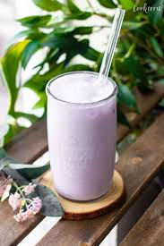

Taro Milk Tea

Description
Milk Tea infused with Taro, creating a slightly creamy texture with an aromatic sweetness.
Ingredients
- Milk
- Taro Powder
- Sugar/Syrup
- Ice
Steps
- First heat up the milk to just below boiling. You do not want to burn the milk
- Then add 2 tablespoons of taro powder into the milk and stir
- Once mixed, add sugar/syrup based on preference.
- Once everything is mixed, add the ice and stir until the drink has cooled.